Peugeot 203
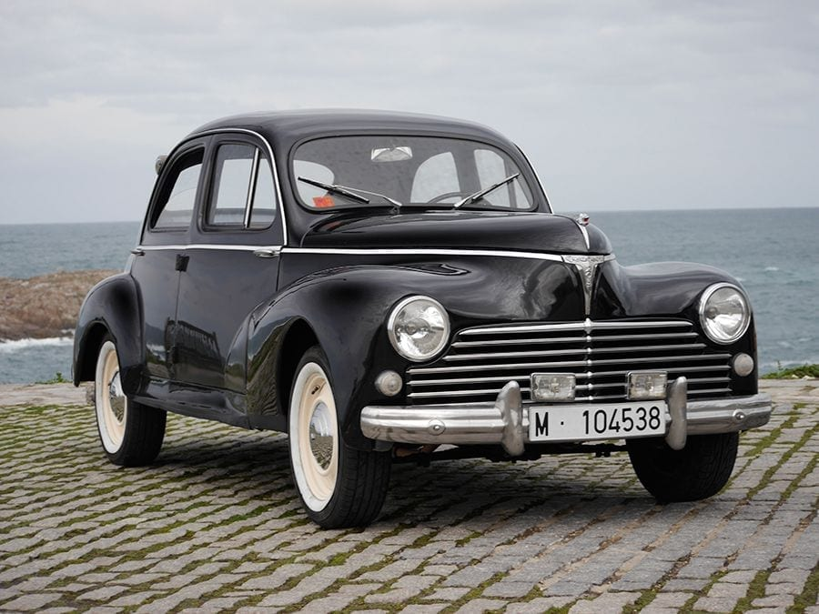
Primer modelo fabricado en serie tras la Segunda Guerra Mundial, con motor de 4 cilindros, carrocería aerodinámica, gran fiabilidad. Representó la recuperación de Peugeot y fue muy apreciado por su robustez.
Peugeot 403
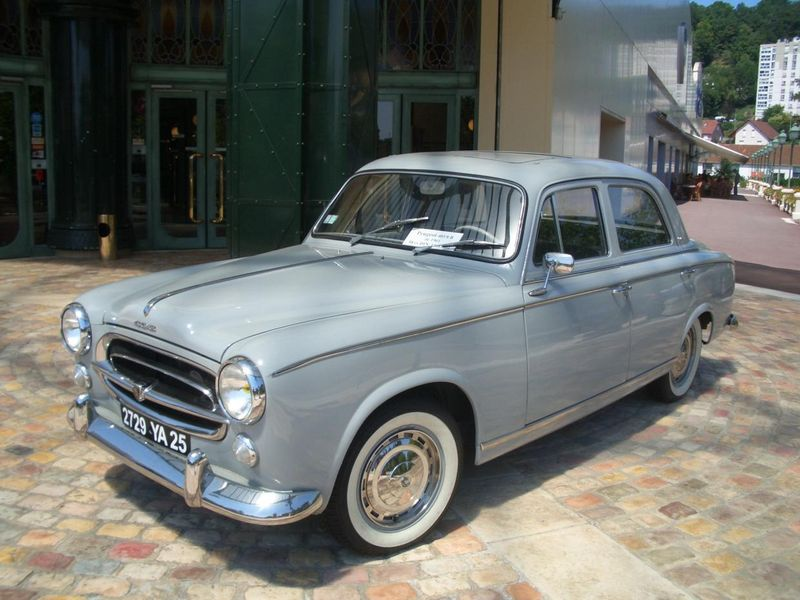
Motor de 1.5 litros, carrocerías berlina, cabrio y familiar.
Peugeot 504
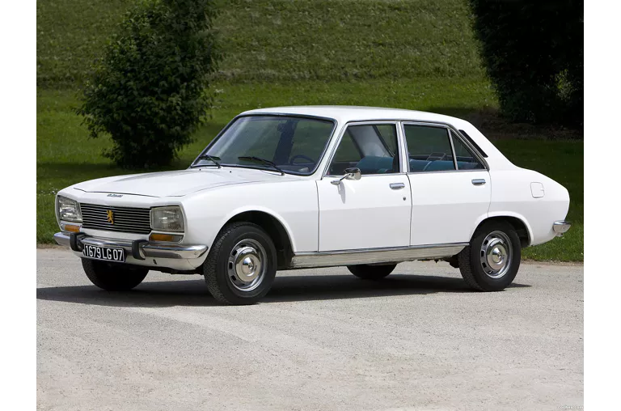
Suspensión independiente, tracción trasera, versiones coupé, cabrio y familiar. Coche del Año en Europa (1969).
Peugeot 205 GTI
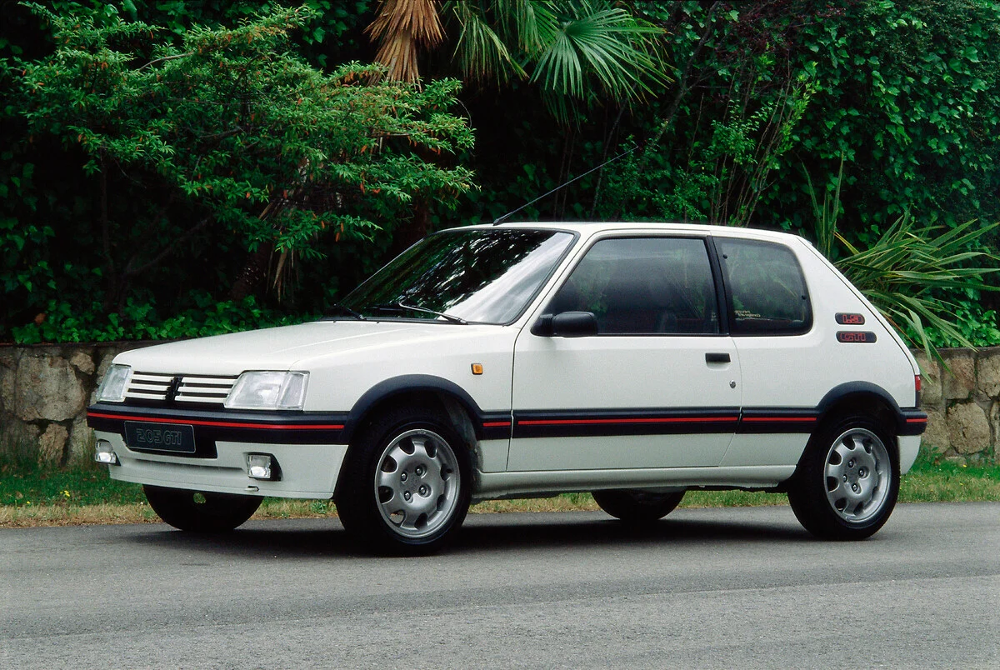
Uno de los hot hatch más icónicos de los años 80. Muy ligero y deportivo; rival directo de coches como Golf GTI. Sus versiones GTI y Turbo 16 dominaban el rally.
Peugeot 202
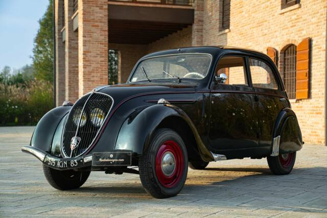
Diseño aerodinámico con faros integrados en la parrilla. Uno de los modelos más reconocibles de Peugeot antes de la guerra.
Peugeot 404
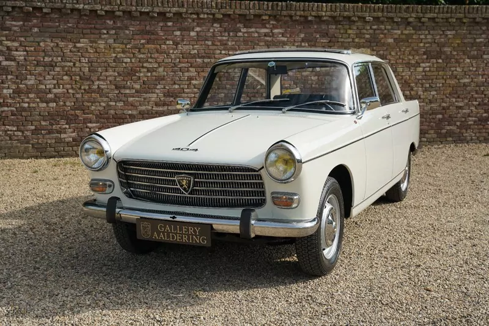
Presentado en 1960 con diseño de Pininfarina. Muy popular como taxi en muchos países. Existían versiones sedán, familiar y pickup.

Renault 4
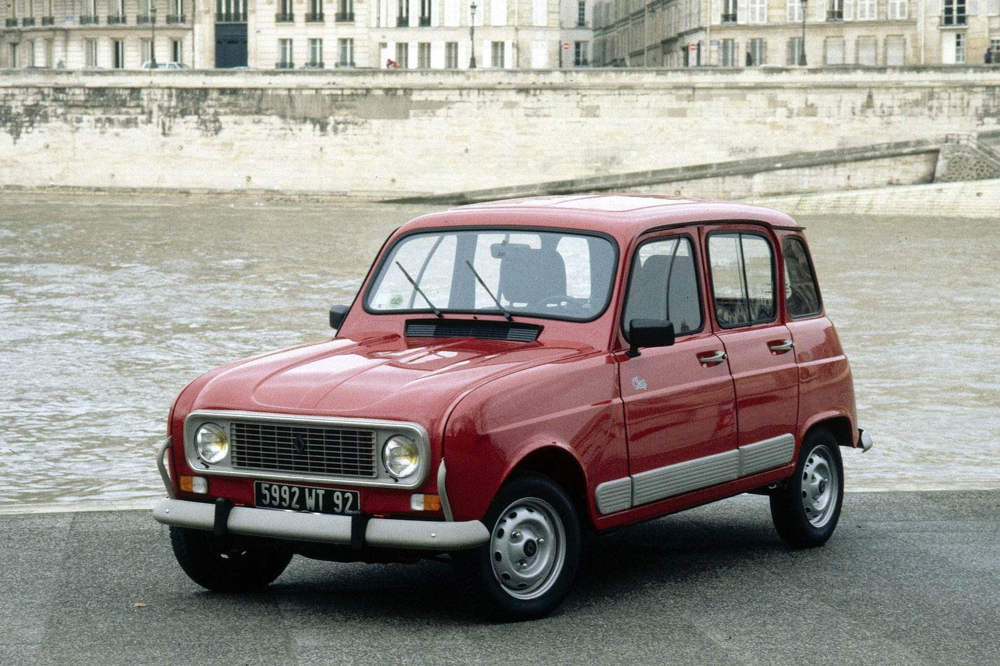
Uno de los coches franceses más famosos de todos los tiempos. Más de 8 millones de unidades producidas. Muy simple, económico y resistente, se fabricó durante más de 30 años.
Renault 5

Uno de los utilitarios más icónicos de Europa. Su versión deportiva Renault 5 Turbo fue una leyenda del rally.
Renault 4CV
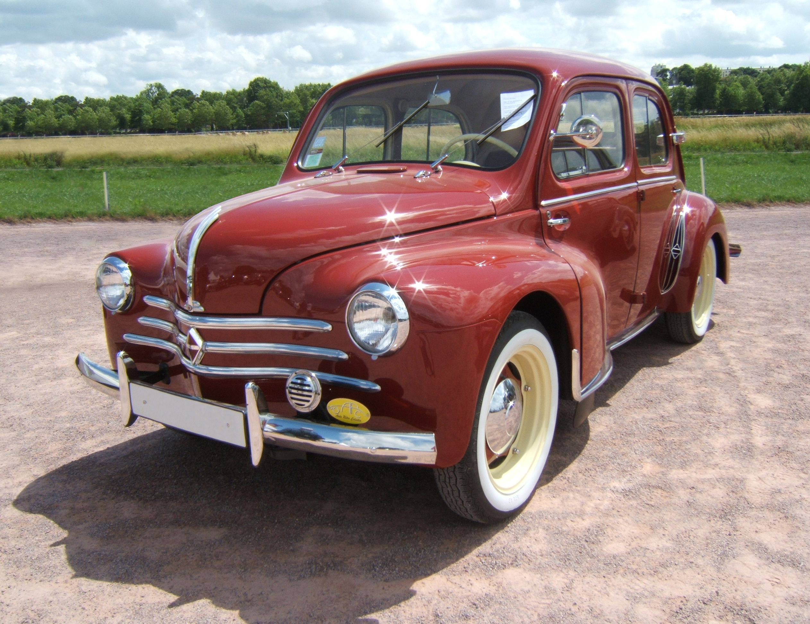
Primer gran éxito de Renault tras la Segunda Guerra Mundial. Pequeño, barato y accesible para la población. Primer coche francés en superar 1 millón de unidades.
Renault Dauphine
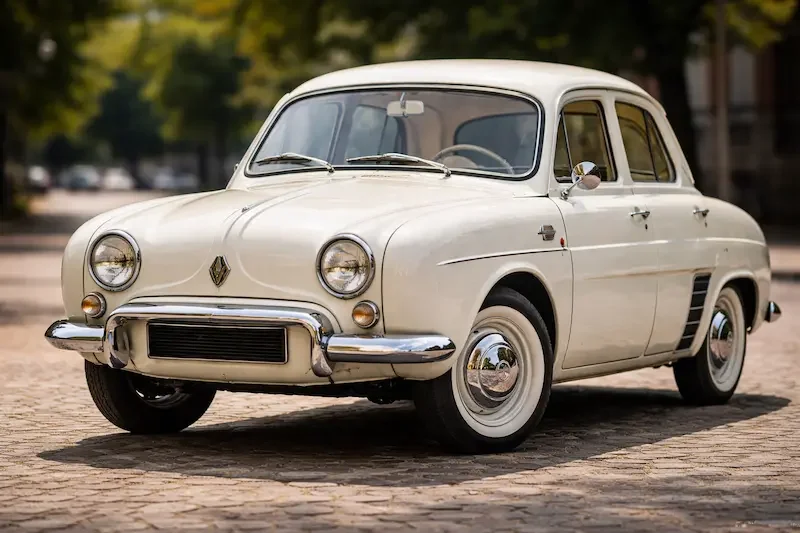
Evolución del 4CV con más comodidad y estilo. Fue uno de los coches europeos más vendidos de finales de los 50.
Renault 8
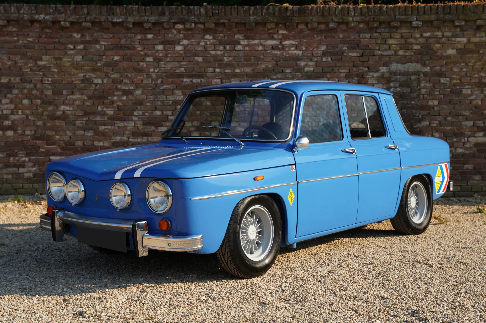
Famoso por sus versiones deportivas Renault 8 Gordini. Muy utilizado en competición y rally. Contribuyó a la imagen deportiva de Renault.
Renault 16
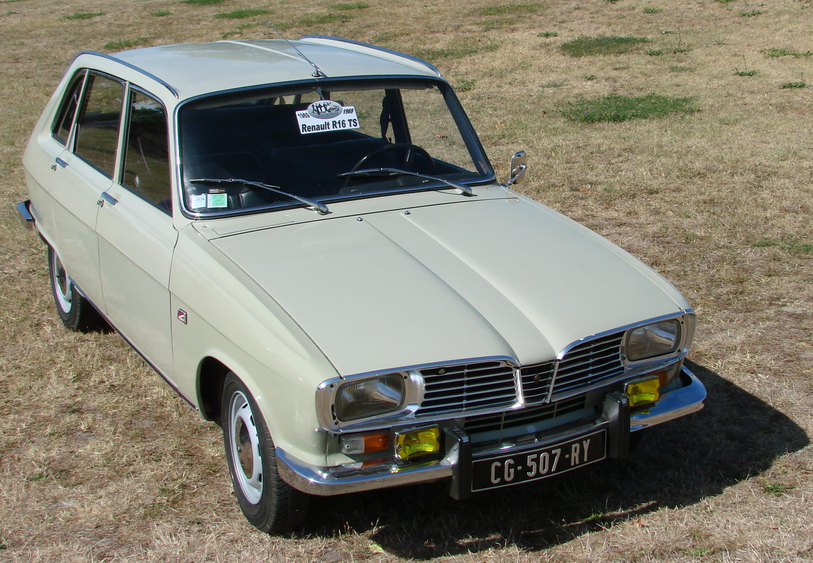
Un coche muy innovador para su época. Fue uno de los primeros hatchback familiares modernos. Ganó el premio Coche del Año en Europa en 1966.
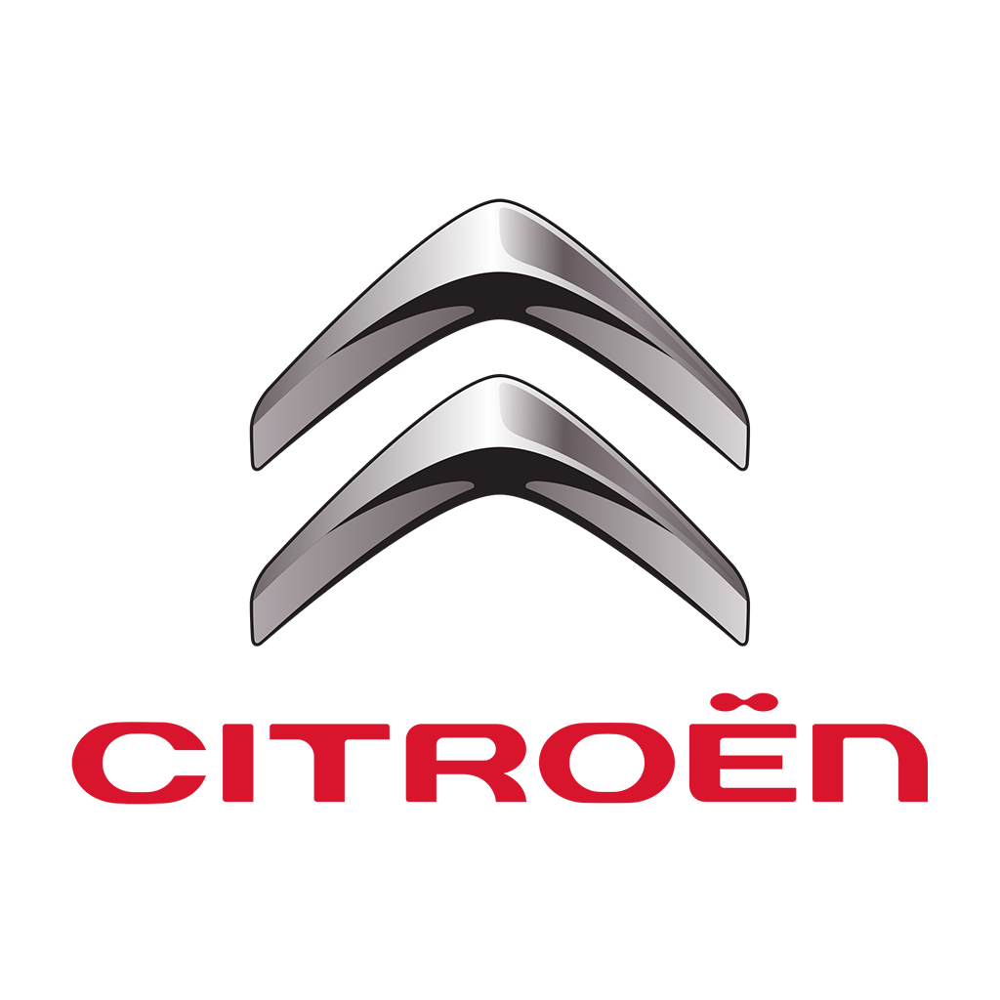
Citroën 2CV
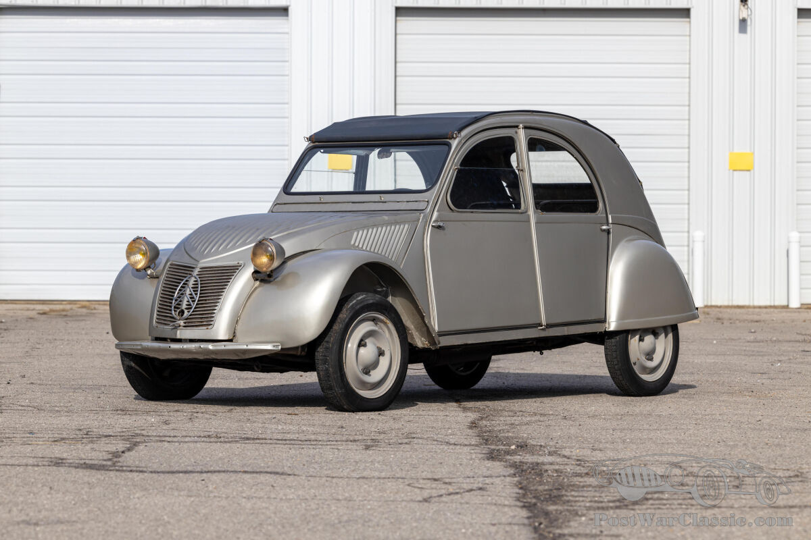
Probablemente el Citroën más famoso de todos los tiempos. Diseñado para ser barato, simple y capaz de circular por caminos rurales. Se produjeron más de 5 millones de unidades.
Citroën DS
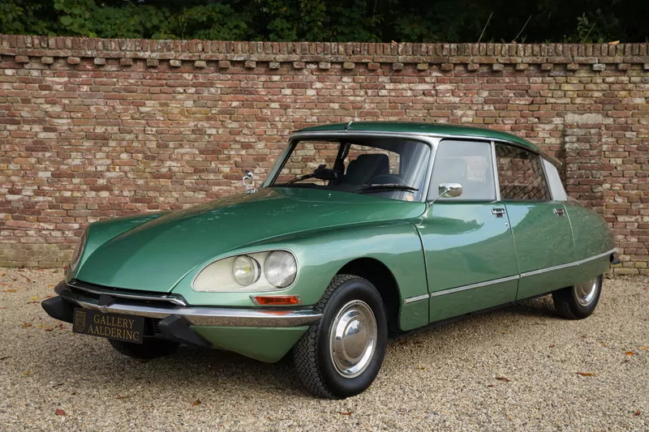
Considerado uno de los coches más innovadores de la historia. Famoso por su suspensión hidroneumática, que le daba una conducción extremadamente suave. Su diseño futurista sorprendió al mundo en el Salón de París de 1955.
Citroën Traction Avant
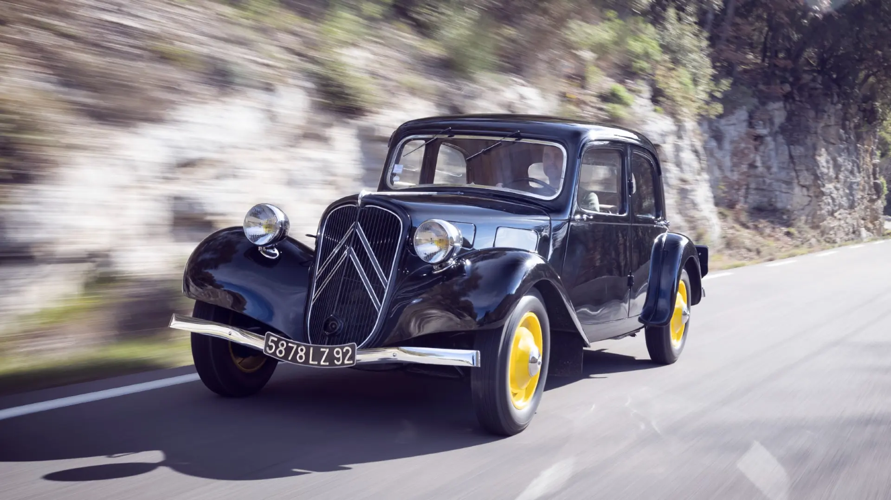
Revolucionario para su época. Uno de los primeros coches producidos en masa con tracción delantera. También tenía carrocería monocasco, algo muy avanzado en los años 30.
Citroën Ami 6
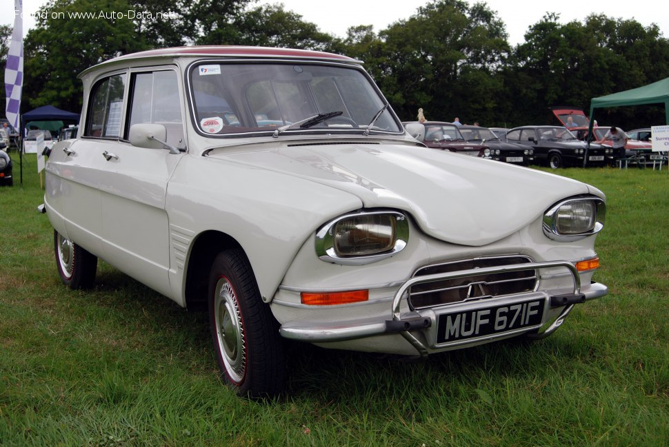
Muy reconocido por su luneta trasera invertida. Diseño muy peculiar que lo convirtió en un coche muy recordado. Fue uno de los modelos más vendidos en Francia durante los años 60.
Citroën SM
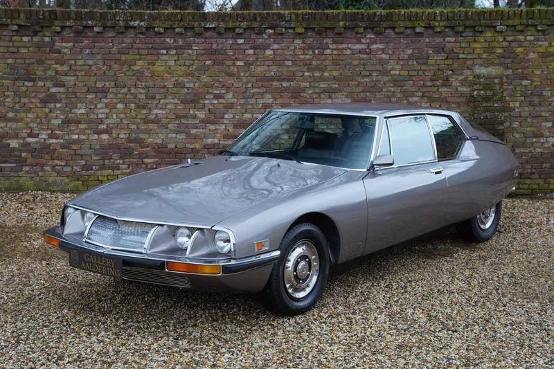
Un gran turismo de lujo desarrollado con ayuda de Maserati. Motor potente y tecnología avanzada para la época. Muy valorado hoy por coleccionistas.
Citroën GS
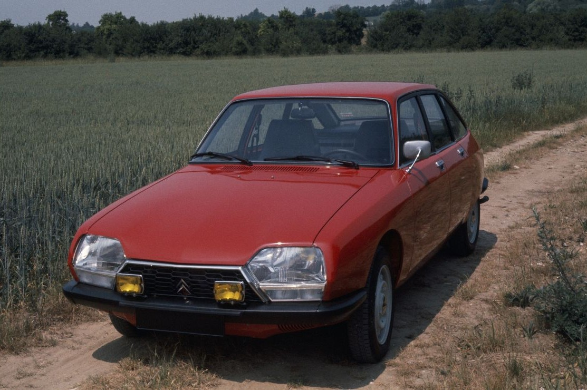
Un coche familiar muy moderno para su tiempo. También llevaba suspensión hidroneumática como el DS. Ganó el premio Coche del Año en Europa 1971.